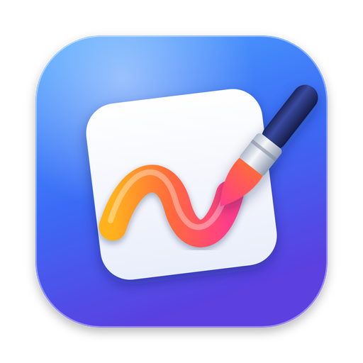
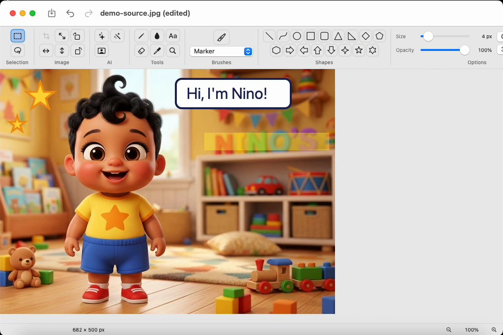

The simple paint app
your Mac never came with
Quick Canvas is a fast, friendly paint program for macOS. Draw, add shapes and text, crop screenshots, remove backgrounds and save as PDF, JPG or PNG. If you miss Microsoft Paint on your Mac, this is for you.

Everything you need for quick picture edits
A Microsoft Paint alternative built natively for the Mac: open it, draw, save. No learning curve, no clutter, no account.
Draw and paint
Pencil, eraser and six brushes: round, calligraphy pen, marker, oil, crayon and spray. Adjust size and opacity.
17 shapes
Lines, curves, rectangles, rounded rectangles, ellipses, triangles, polygons, arrows and stars, outlined or filled.
Select, copy, paste
Rectangle and free-form lasso selection. Move with the mouse or arrow keys, copy, cut, paste from any app, crop.
Crop, resize, rotate
Crop to a selection, resize or stretch the canvas, rotate 90 degrees, flip horizontally or vertically.
Text on pictures
Click anywhere and type. Nine text sizes, any colour, see-through if you like.
Save as PDF, JPG, PNG and more
PNG, JPG, JPEG, PDF, GIF, TIFF, BMP and HEIC, at high quality or as a smaller file.
AI tools on your Mac
Remove a background in one click. Create or reimagine images with Apple Intelligence, on device.
Rulers and gridlines
Pixel rulers, dotted gridlines, live cursor position and zoom from 25% to 800%.
Private and clean
No account, no tracking, works offline. Files have no watermark and no hidden data.
See it in 25 seconds
Open a picture, highlight text, add a speech bubble and stars, crop, and save it as a PDF. Real footage of the app.
Simple pricing
Try every feature free for 7 days
one-time purchase, yours for good
- No subscription, ever
- Nothing is charged when the trial ends
- Restore your purchase on any Mac with your Apple ID
- After the trial, pictures still open and view without paying
How-to guides
Step-by-step answers to common Mac picture questions, with the built-in Mac way and the Quick Canvas way.
Is there Paint for Mac?
Read the guide →Save an image as PDF on Mac
Read the guide →Remove a background on Mac
Read the guide →Crop a screenshot on Mac
Read the guide →Add text to a picture on Mac
Read the guide →Resize an image on Mac
Read the guide →Convert HEIC to JPG on Mac
Read the guide →Questions
Is there a Paint app for Mac?
Macs do not come with Microsoft Paint, and Microsoft does not make a Mac version. Quick Canvas is a simple paint app for Mac that covers the same everyday jobs: drawing, shapes, text, selecting, cropping, resizing and saving pictures.
How much does Quick Canvas cost?
Quick Canvas is free to download with a full 7-day trial. After that, a one-time purchase of US$4.99 unlocks it for good. There is no subscription and nothing is charged automatically when the trial ends.
What file formats can Quick Canvas save?
PNG, JPG, JPEG, PDF, GIF, TIFF, BMP and HEIC. Each can be saved at high quality or as a smaller file to save space.
Does Quick Canvas add a watermark?
No. Saved files contain only your picture: no watermark, no app name, no author, no location and no system details. Saved PDFs also have the system version and timestamps removed.
Does Quick Canvas work offline?
Yes. Everything works without an internet connection. There is no account, no tracking and no analytics.
Which Macs does it run on?
Any Mac with macOS 13 Ventura or later, Apple silicon or Intel. Remove Background needs macOS 14 or later. AI image creation needs Apple silicon, macOS 15.2 or later and Apple Intelligence turned on.
Can I use Quick Canvas to make pixel art?
Yes. The pencil draws single pixels, the magnifier zooms to 800%, and gridlines help with placement.